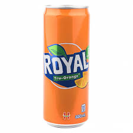
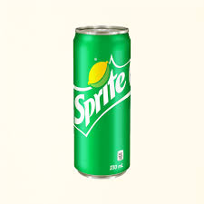
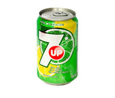
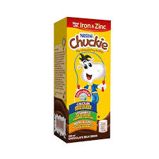
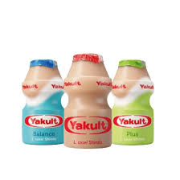

| Name |
Weight/Volume |
Description |
Ingredients |
Image |
| Coca-Cola |
330 ml |
Also known as "Coke", it was invented by John Pemberton, a pharmacist in Atlanta, Georgina, 1886. A classic and sweetened carbonated drink that become popular because of its refreshing taste. The best-selling carbonated drink in the world. Enjoy! |
Coke Original: Carbonated Water, Sugar, Caramel Color, Phosphoric Acid, Caffeine, Natural Flavor, Citric Acid, Sodium and Potassium Benzoate, Aspartame, and Sucralose
Coke Zero: Carbonated Water, Caramel Color, Phosphoric Acid, Aspartame(contains Phenylalanine), Potassium Benzoate, Natural Flavor, Potassium Citrate, Acesulfame-Potassium. |
 |
| Royal |
330 ml |
It is a crabonated fruit-flavored softdrinks brand. Royal is owned by Coca-Cola Company, it is only available in Philippines. In year 1992, it was first introduced by San Miguel Brewery as their first non-alcoholic drink. Royal is a popular fruit-flavored carbonated, caffeine-free and known for its refreshing and unique flavor. |
Carbonated Water, Sugar, Citric Acid, Acacia Gum, Natural Flavors, Sweeteners, Potassium Sorbate, Vitamins B3, B5, and B6. |
 |
| Sprite |
330 ml |
Sprite is a lemon-lime flavored drink, this made by the Coca-Cola Company. In 1961, this drink was introduces in United States. A refreshing and not too sweet carbonated drink. |
Sprite Original: Carbonated Water, High Fructose COrn Syrup (in some region sugar), Citric Acid, Natural Flavors, Sodium Benzoate, Sodium Citrate
Sprite Zero: Carbonated Water, Citric Acid, Natural Flavors, Potassium Citrate, Potassium Benzoate, Aspartame, Acesulfame Potassium. |
 |
| 7Up |
330 ml |
7Up is an American brand created by Charles Leiper Grigg.This drink was firstly known as "Bib-Label Lithiated Lemon-Lime Soda." A refereshing, no artificial colors, caffeine-free and lemon-lime flavored beverages. |
7Up Original: Filtered Carbonated Water, High Fructose Corn Syrup, Citric Acid, Potassium Citrate, Natural Flavors, Calcium Disodium EDTA
7Up Zero: Carbonated Water, Acids, Natural Flavors, Aspartame, Acesulfame, Preservative(Sodium Benzoate), Potassium Citrate, Calcium Disodium EDTA, Phenylalanine. |
 |
| Fanta |
330 ml |
Fanta is created in Germany in year 1941 by the Coca-Cola Deutschland uber Max Keith, a German businessman. A refreshing, fizzy fruit-flavored carbonated softdrinks. It has an intense and refreshing orange taste. |
Carbonated Water, Sugar, Orange Juice from Concentrate(3.7%), Citrus Fruit from Concentrate(1.3%), Citric Acid, Vegetable Extracts(carrot, Pumpkin), Sweeteners(Acesulfame K, Sucralose), Preservatives(Potassium Sorbate), Malic Acid, Acidity Regulator(Sodium Citrate), Stabiliser(Guar Gum), Natural Orange Flavourings with Other Natural Flavourings, Antioxidant(Ascorbic Acid). |
 |
| Rite 'n Lite |
250 ml |
A guilt-free carbonated drink, no sugar, no carbs and no calories. Known for its unique selling proposition because its completely sugar free, carbs, and calories. This drink is made in the Philippines.
Comes with different flavors: Peach, Orange, Root Beer, Lemon, Lemon & Lime, Cucumber, Lychee + Rose, Calamansi + Ginger + Honey, Green Apple + Tea. |
Carbonated Water, Sweeteners, Natural Flavors/Natureidentical/Artificial Flavors (FD & Yellow I5), Preservatives, Antioxidant(AScorbic Acid and Caramelized Caramel Color), Acidity Regulators(Citric Acid, Malic Acid and Sodium Citrate). Other ingrdients EDTA, Vitamin K2 as MK7. |
 |
| Nescafe Cappuccino |
225 ml |
A popular brewed coffe because it is a quick and easy way to enjoy a classic cappuccino. A very convenient brewed coffe drink, it taste like rich and frothy. It was made in Australia but it may vary depends on what region. |
Premium Arabica, Robusta Coffee Beans, Sugar, and Milk Solids. |
 |
| Chuckie |
250 ml |
Chuckie a chocolate milk drink mby Nestle Philippines. This drink is a good source of protein and calcium. This drink is consumed by children as a snack or meal. |
Sugar, Milk (Skimmed Milk Powder, Milk Fat, Buttermilk), Cocoa Powder, Oil (Palm Oil), Vitamins (Vit A, Vit B1, Vit D, Niacin, B2, B6, E, B12, Pantothenic Acid, Folic Acid, and Biotin), Minerals (Calcium Phosphate, Disodium Phosphate, Iron Pyrophosphate, and zinc sulfate). |
 |
| Yakult |
80 ml |
In year 1935 by Dr. Minoru Shirota in Japan, the yakult came from Esperabto word jahurto which means yogurt. Yakult is made of lactic bacteria, Lacticaseibacillus paracasei strain Shirota (LcS), its a fermented dairy drink that contains probiotic cultures. Its a probiotiv drink that hekps correct imbalances the digestive system. |
Water, Sugar, Nonfat Milk, Glucose, Natural Flavors, L. Paracasei Strain Shirota |
 |
| Mogu Mogu |
320 ml |
Its a sweet and chewy drink, it is a combination of fruit juice and nata de coco. Mogu Mogu comes in many flavors: lychee, mango, strawberry, pineapple, apple, and lemon. Its a good source of Vitamin C, dietary fiber, and it is low in cholesterol. |
Water(63.65%), Nata De Coco(25%), Fructose(7%), Sugar(4%), Artificial Coconut Flavor, Calcium Lactate (Acidulant), Sodium Hydrogen Sulfate, Sodium Benzoate(Preservative),Gella Gum(Gelling Agent), No Color Added and Contains Coconut. |
 |